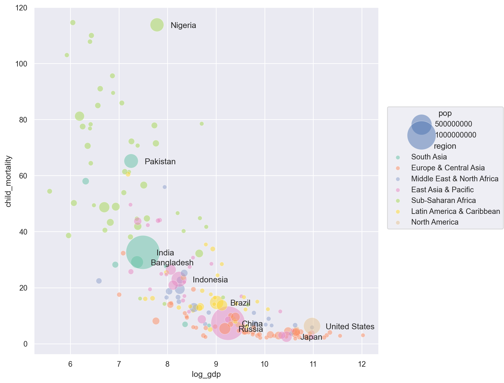

import numpy as np
import pandas as pd
# visualization
import matplotlib.pyplot as plt
import seaborn as sns
import seaborn.objects as so
import plotly.express as px
# statistics
import statsmodels.api as smwdi_data = (
"https://raw.githubusercontent.com/nickeubank/"
"practicaldatascience/master/Example_Data/wdi_plotting.csv"
)
world = pd.read_csv(wdi_data)
names = world.columns[3:].to_list()
names.append("GDP per capita (constant 2015 US$)")
countries = world["Country Code"].unique()wdi = pd.read_parquet("data/wdi.parquet")
wdi2 = wdi[wdi["Indicator Name"].isin(names) & wdi["Country Code"].isin(countries)].copy()
indic_name = wdi2["Indicator Name"].unique()
wdi2.columns = wdi2.columns.str.replace(" ", "_")
wdi2.rename(str.lower, axis=1, inplace=True)
dic = dict(zip(indic_name, ["CO2", "GDP", "life_exp", "literacy", "mortality", "child_mortality", "polution", "pop"]))
wdi2 = wdi2.replace({"indicator_name": dic})
years = wdi2.loc[:, '1960':'2021'].columns
wdi2_long1 = wdi2.melt(
id_vars=wdi2.columns[:4],
value_vars=years,
value_name="values",
var_name="year"
)
wdi2_long1 = wdi2_long1.drop(columns="indicator_code")
wdi2_long2 = wdi2_long1.pivot(
index=["country_name", "country_code", "year"], columns="indicator_name",
values="values"
)
wdi2_long2.columns.name = ""
wdi2_long2 = wdi2_long2.reset_index()
wdi2_long2["year"] = wdi2_long2.year.astype(int)
indicators = wdi["Indicator Name"].unique()
indicators = pd.Series(indicators)
indicators[indicators.str.contains("region")]751 Merchandise exports to low- and middle-income ...
752 Merchandise exports to low- and middle-income ...
764 Merchandise imports from low- and middle-incom...
765 Merchandise imports from low- and middle-incom...
dtype: objectwdi_country = pd.read_csv("data/WDICountry.csv")
wdi2_long2 = wdi2_long2.merge(wdi_country[["Country Code", "Short Name", "Region"]], left_on="country_code", right_on="Country Code", how="left")
wdi2_long2.drop(columns=["Country Code"], inplace=True)
wdi2_long2.rename(columns={"Region": "region", "Short Name": "country"}, inplace=True)wdi2_long2.region.value_counts(dropna=False)Europe & Central Asia 3596
Sub-Saharan Africa 2976
Latin America & Caribbean 2604
East Asia & Pacific 2294
Middle East & North Africa 1302
South Asia 496
North America 186
Name: region, dtype: int64wdi_2020 = wdi2_long2.query('year == 2020')
wdi_2020 = wdi_2020.assign(
log_gdp = lambda x: np.log(x.GDP),
log_child_mortality = lambda x: np.log(x.child_mortality),
)big_countries = wdi_2020.nlargest(10, "pop")["country"]
idx = wdi_2020["country"].isin(big_countries)
wdi_2020_big = wdi_2020[idx](
so.Plot(wdi_2020, x="log_gdp", y="child_mortality")
.add(so.Dot(edgecolor="white", alpha=.5), pointsize="pop", color="region")
.scale(pointsize=(6, 50), color="Set2")
.layout(size=(8, 8))
.add(so.Text(halign="left", offset=20),
x=wdi_2020_big.log_gdp,
y=wdi_2020_big.child_mortality,
text=wdi_2020_big.country)
)
wdi_2020_2 = wdi_2020.dropna(subset=["log_gdp", "log_child_mortality", "pop"])
import plotly.express as px
import plotly.io as pio
#pio.renderers.default = "plotly_mimetype+notebook"
fig = px.scatter(wdi_2020_2,
x="log_gdp", y="child_mortality",
size="pop", size_max=40,
hover_name="country_name")
fig.show()Unable to display output for mime type(s): application/vnd.plotly.v1+jsonwdi_2020.head()| country_name | country_code | year | CO2 | GDP | child_mortality | life_exp | literacy | mortality | polution | pop | country | region | log_gdp | log_child_mortality | |
|---|---|---|---|---|---|---|---|---|---|---|---|---|---|---|---|
| 60 | Afghanistan | AFG | 2020 | NaN | 553.036479 | 58.0 | 62.575 | NaN | NaN | NaN | 38972230.0 | Afghanistan | South Asia | 6.315424 | 4.060443 |
| 122 | Albania | ALB | 2020 | NaN | 4410.455165 | 9.8 | 76.989 | NaN | NaN | NaN | 2837849.0 | Albania | Europe & Central Asia | 8.391733 | 2.282382 |
| 184 | Algeria | DZA | 2020 | NaN | 3873.510015 | 22.7 | 74.453 | NaN | NaN | NaN | 43451666.0 | Algeria | Middle East & North Africa | 8.261916 | 3.122365 |
| 246 | American Samoa | ASM | 2020 | NaN | 14303.627033 | NaN | NaN | NaN | NaN | NaN | 46189.0 | American Samoa | East Asia & Pacific | 9.568268 | NaN |
| 308 | Andorra | AND | 2020 | NaN | 34394.277553 | 2.5 | NaN | NaN | NaN | NaN | 77700.0 | Andorra | Europe & Central Asia | 10.445645 | 0.916291 |